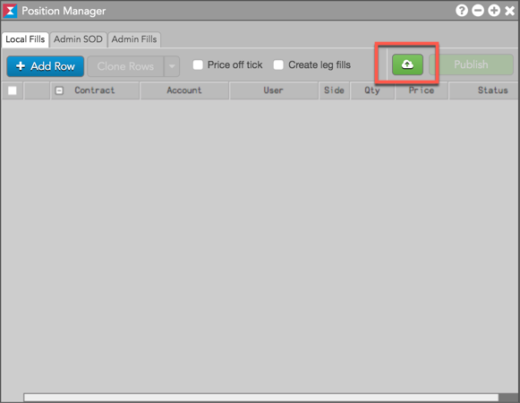
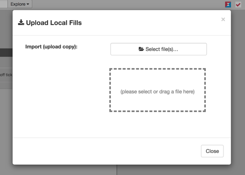
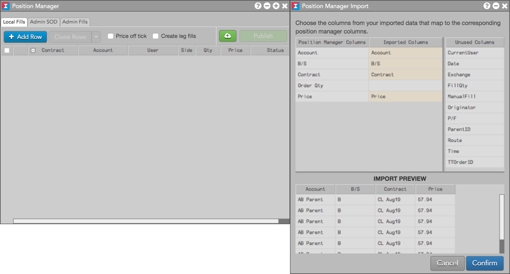
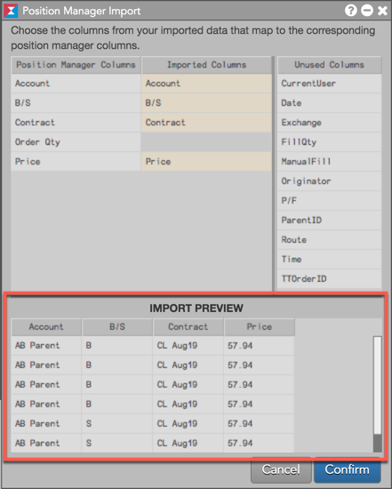
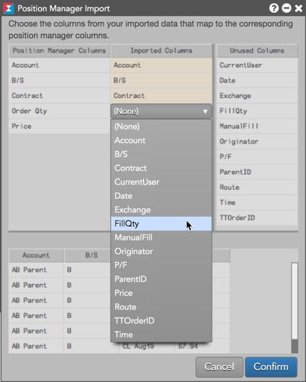
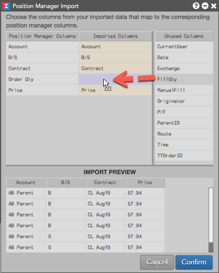
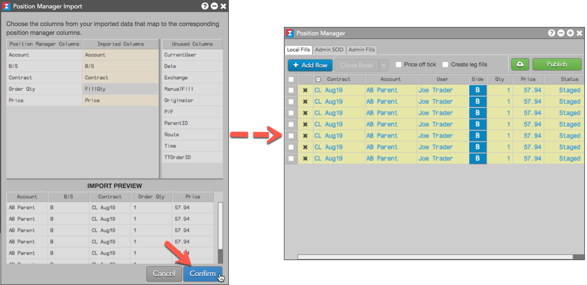

You can upload local manual fills into the TT system using the import functionality in Position Manager. For example, options users that do not use Expiration Manager can track their futures positions from exercised or expired options by uploading their underlying fills into Position Manager. Uploaded fills must be in the CSV file format.
Note: Uploading manual fills for Autospreader parent orders is not supported.
To upload local manual fills to TT:


The Position Manager import utility opens seeded with the uploaded CSV file.

Note: Only the first ten (10) lines of the file are displayed in the IMPORT PREVIEW pane.


Tip: You can also drag-and-drop columns from Unused Columns to Imported Columns.

The fills are imported to Position Manager in a "Staged" state.
